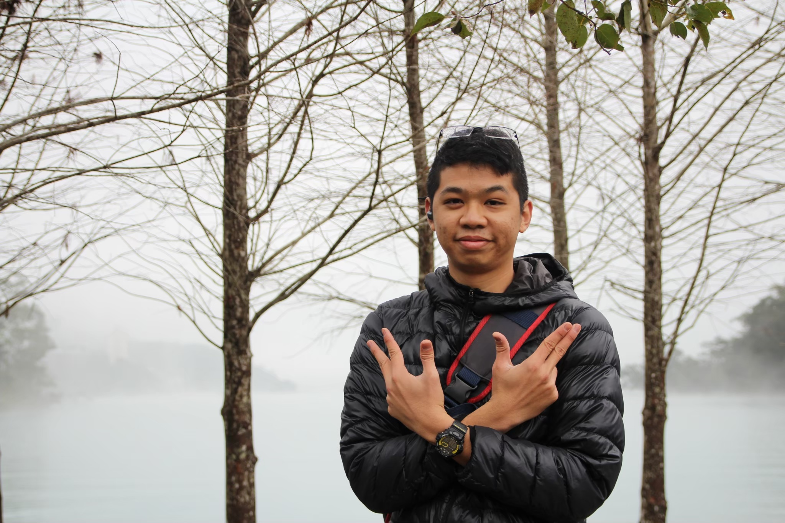

Phoenix 寵物溝通
首頁
個人經歷
服務項目
飼主回饋
聯絡我們
個人經歷

寵物溝通師：Dennis
學習脈絡：師承孟孟老師、渤程老師線上課程
溝通方式：靜心式、直覺式
練習概況：初學
進行方式：
🔶報名成功後（溝通前），請透過LINE或Messenger訊息提供：
🔹3個月內2-3張寶貝的照片，其中一張需清楚且眼睛看鏡頭的正面全身照片（不要濾鏡，請挑選毛孩“獨照”）
🔹毛孩的姓名和年齡，主要飼主的稱呼 (如：媽咪、爹地、哥哥、姐姐…. 等)
注意事項：
🐾報名者必須是毛寶貝的主要照顧者，一人一寵。
🐾若24小時內未回覆，將視為取消報名(請留意陌生訊息)。
🐾預約好後請先告知毛孩有個哥哥會找牠聊天，讓牠有心理準備。
🐾目前主要練習核對身份資訊方面，資訊不論對錯，請飼主直接告知，且希望能收到飼主回饋正確的答案，謝謝！
🐾溝通準確度若不符期望時，請您抱持最大的包容心，對練習生來說就是最大的鼓勵，謝謝您！
🐾因為是初學，仍在練習精準度，現階段需要較多時間，回覆的時間可能不一定、比較慢，請多包涵。
🔹相信動物溝通，並對寶貝有想要理解的心情。
🔹溝通範圍僅協助雙方彼此的理解，明白毛孩的想法，而非改變毛孩的行為。
🔹溝通時，如果有接收到更多的資訊，會一起提供，請給予正確回饋，切勿敷衍。
🔹完成溝通後的毛孩，視為自動默認將溝通內容及毛孩的照片公開在FB或IG作為學習紀錄分享。
🔹較私人的資訊或是您不想分享的答案可以主動告知我，會適當的刪減內容。
🔆因為有工作，所以是休假或空閒時才能進行溝通，等待或許需要一些時間。